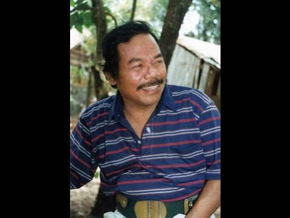

Benyamin Sueb
An Artist from Betawi

Major Event in Benjamin's Life
- 1939 - He was born on 5 march in Kemayoran, batavia(now Jakarta)
- 1941 - His father died
- 1950 - He joined the Melody Boys who played calypso music, rhumba, cha-cha, jazz, blues, rock n roll and some keroncong
- 1959 - Benyamin married Noni
- 1960 - Beib Benyamin, his first son was born
- 1963 - The Melody Boys changed their name to Melodi Ria
- 1970 - He made a debut in a film titled "Benteng Betawi"
- 1972 - He starred in his eighth film as Jamal, the main character in Intan Berduri. He was paired with Rima Melati.
- 1973 - He collaborated with Bing Slamet on Ambisi (Ambition) and Bing Slamet Setan Djalanan (Bing Slamet the Street Demon). He also collaborated with Sjumandjaja on Si Doel Anak Betawi
- 1973 - He received Citra Award for Intan Berduri
- 1975 - Si Doel Anak Betawi made a sequal titled Si Doel Anak Modern
- 1975 - He won another Citra Award for Si Doel Anak Modern
- 1977 - He wrote "Pungli", a critical song to government
- 1979 - He divorced on July 7 and reconciled in the same year
- 1992 - He formed a new group named Al-Haj
- 1995 - He died of a heart attack on September 5 after playing soccer
- 1995 - He received a special award from the committee of Festival Sinetron Indonesia for his contribution to the development of Indonesian soap operas